Για πληροφορίες, προβλήματα ή προτάσεις βελτίωσης:
Κοκολόγος Σταμάτης, ΠΕ70 · https://github.com/stam1966/efimeries-ekpaideftikon/issues
Για μια νέα σχολική χρονιά ακολουθήστε αυτή τη σειρά:
Η εφαρμογή οργανώνει τις εφημερίες των εκπαιδευτικών με στόχο τη λειτουργικότητα του σχολείου και τη δίκαιη κατανομή σε όλο το σχολικό έτος. Κρατά ιστορικό ανά σχολικό έτος, υποστηρίζει πραγματοποιημένες εφημερίες, αντικαταστάσεις, απουσίες, ειδικές ημέρες, εκτυπώσεις και πλήρες backup.
| Τρόπος | Κατάλληλος για | Βασική λογική |
|---|---|---|
| Ανά ημέρα | Κυρίως Δημοτικό | Ο/Η εκπαιδευτικός εφημερεύει όλη την ημέρα. Μετράνε οι ημέρες. |
| Ανά διάλειμμα | Σχολεία με κατανομή ανά χρονική ζώνη | Κάθε διάλειμμα έχει δικό του εφημερεύοντα. Μετράνε τα συνολικά λεπτά. |
| Ανά βάρδια / ζώνη | Γυμνάσιο / Λύκειο ή σύνθετα ωράρια | Η βάρδια αποτελείται από επιλεγμένα διαλείμματα και καλύπτει συγκεκριμένους τομείς. |
Από την Αρχική, το κουμπί Νέα διεπαφή (Edge) — δοκιμαστική ανοίγει μια σύγχρονη, πιο απλή οθόνη σε παράθυρο εφαρμογής του Edge. Δουλεύει πάνω στην ίδια βάση και τον ίδιο αλγόριθμο, οπότε ό,τι αλλάξετε εκεί φαίνεται και στην κλασική διεπαφή, και αντίστροφα. Έχει έξι ενότητες:
Η νέα διεπαφή τρέχει μόνο στον δικό σας υπολογιστή (δεν είναι προσβάσιμη από το δίκτυο) και χρειάζεται τον Microsoft Edge, που υπάρχει σε κάθε Windows 10/11. Αν ο Edge δεν βρεθεί, ανοίγει ο προεπιλεγμένος περιηγητής. Η Αναίρεση της Αρχικής επαναφέρει την τελευταία αλλαγή (παραγωγή, αντικατάσταση, απουσία).
Όλες οι λειτουργίες βρίσκονται στο μενού αριστερά, χωρισμένες σε τρεις ομάδες:
| Ομάδα | Ενότητα | Τι κάνετε εκεί |
|---|---|---|
| ΚΑΘΗΜΕΡΙΝΑ | Αρχική | Γρήγορη εικόνα: σήμερα, τι χρειάζεται προσοχή, ισοκατανομή. |
| Πρόγραμμα | Προβολή και διόρθωση του προγράμματος (λίστα ή εβδομάδα). | |
| Εκτυπώσεις και σύνολα | Εκτυπώσεις, σύνολα ανά εκπαιδευτικό, εξαγωγή σε Excel. | |
| ΣΧΕΔΙΑΣΜΟΣ | Παραγωγή προγράμματος | Δημιουργία ή αναδημιουργία του προγράμματος. |
| ΡΥΘΜΙΣΗ | Εκπαιδευτικοί | Ονόματα, διαθεσιμότητα, κύρια και εναλλακτικές ημέρες. |
| Οργάνωση | Τομείς, ειδικές ημέρες, χρονικές ζώνες, βάρδιες. | |
| Ρυθμίσεις | Σχολικό έτος, στοιχεία σχολείου, φάκελος δεδομένων, backup. |
Στο κάτω μέρος του μενού υπάρχουν τα Βοήθεια / Οδηγός χρήσης (ανοίγει αυτόν τον οδηγό) και Πληροφορίες / Επικοινωνία.
Μόνιμος σύνδεσμος λήψης (ίδιος για κάθε έκδοση, δείχνει πάντα στην τελευταία): github.com/stam1966/efimeries-ekpaideftikon/releases/latest. Άμεση λήψη 64-bit: …/releases/latest/download/Efimeries_Setup_x64.exe, 32-bit: …/Efimeries_Setup_x86.exe.
Από τη σελίδα Releases του αποθετηρίου κατεβάστε το Efimeries_Setup_…_x64.exe (64-bit Windows, σχεδόν όλοι οι υπολογιστές) ή το …_x86.exe (32-bit Windows) και ανοίξτε το. Δεν χρειάζονται δικαιώματα διαχειριστή. Δημιουργείται εικονίδιο στην επιφάνεια εργασίας (προαιρετικά) και στο μενού Έναρξη. Κατά την εγκατάσταση η εφαρμογή ρωτά πού θα αποθηκεύονται τα δεδομένα (προεπιλογή: Έγγραφα → Εφημερίες Εκπαιδευτικών). Αν θα δουλεύετε από δύο υπολογιστές, επιλέξτε τον ίδιο κοινόχρηστο φάκελο δικτύου και στους δύο. Ο φάκελος είναι κοινός για x64 και x86, και δεν διαγράφονται ποτέ από ενημέρωση ή απεγκατάσταση. Για να ενημερώσετε, κατεβάστε το νεότερο Setup και ανοίξτε το: αντικαθιστά την παλιά έκδοση και κρατά τα δεδομένα. Η απεγκατάσταση γίνεται από τις «Εφαρμογές» των Windows.
Η εφαρμογή είναι portable: δεν χρειάζεται εγκατάσταση Python ούτε δικαιώματα διαχειριστή. Για 64-bit Windows ανοίξτε τον φάκελο EfimeriesPortable_x64 και τρέξτε το EfimeriesPortable_x64.exe. Για 32-bit Windows χρησιμοποιήστε τον αντίστοιχο φάκελο x86.
Τα δεδομένα βρίσκονται σε φάκελο με τρεις υποφακέλους: data (η βάση κάθε σχολικού έτους, ένα αρχείο ανά έτος), backups (αντίγραφα ασφαλείας) και exports (αρχεία που εξάγετε). Επιπλέον υπάρχει φάκελος logs με καταγραφή σφαλμάτων, χρήσιμο αν χρειαστεί βοήθεια.
Στις Ρυθμίσεις → Τοποθεσία δεδομένων μπορείτε να ορίσετε κοινόχρηστο φάκελο (π.χ. σε δίκτυο ή σε USB), ώστε η εφαρμογή x86 και x64 ή δύο υπολογιστές να χρησιμοποιούν τα ίδια δεδομένα.
Τα δεδομένα πρέπει να βρίσκονται σε έναν κοινό φάκελο δικτύου, στον οποίο έχουν πρόσβαση ανάγνωσης και εγγραφής όλοι οι υπολογιστές. Σε κάθε υπολογιστή ανοίξτε Ρυθμίσεις → Τοποθεσία δεδομένων → Αλλαγή και διαλέξτε τον ίδιο φάκελο. Προτιμήστε τη διαδρομή δικτύου (π.χ. \\\\ΥΠΟΛΟΓΙΣΤΗΣ\\Εφημερίες) αντί για γράμμα μονάδας, γιατί το γράμμα μπορεί να διαφέρει ανά υπολογιστή. Η εγκατάσταση (Setup) και η portable μορφή δουλεύουν και οι δύο με αυτόν τον τρόπο.
Πολύ σημαντικό: την εφαρμογή πρέπει να έχει ανοιχτή μόνο ένας υπολογιστής τη φορά. Η βάση SQLite δεν είναι κατάλληλη για ταυτόχρονη εγγραφή από δίκτυο και μπορεί να καταστραφεί. Η εφαρμογή σάς προειδοποιεί αν ο φάκελος χρησιμοποιείται ήδη. Το καλύτερο είναι ο κοινός φάκελος να είναι στον υπολογιστή που είναι πάντα ανοιχτός ή σε δικτυακό δίσκο (NAS), όχι σε φάκελο που συγχρονίζεται με υπηρεσία cloud την ώρα που χρησιμοποιείται. Κρατήστε και τα τακτικά backup.
Το κουμπί Έλεγχος κοινόχρηστων δεδομένων εμφανίζει ποιο ακριβώς αρχείο βάσης χρησιμοποιείται αυτή τη στιγμή.
Η Αρχική δείχνει με μια ματιά το σχολικό έτος, τον αριθμό εκπαιδευτικών και αναθέσεων, τον τρόπο εφημερίας και πού βρίσκονται τα δεδομένα. Από εδώ μεταβαίνετε γρήγορα στις βασικές ενέργειες.
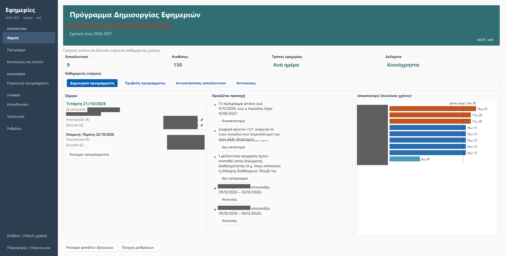
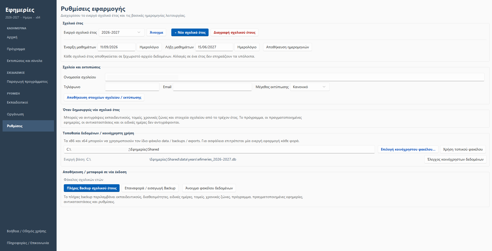
Κάθε σχολικό έτος αποθηκεύεται σε ξεχωριστό αρχείο δεδομένων. Ό,τι αλλάξετε σε ένα έτος δεν επηρεάζει τα υπόλοιπα. Από εδώ επιλέγετε το ενεργό έτος, ανοίγετε άλλο έτος ή δημιουργείτε Νέο σχολικό έτος.
Με το «Νέο σχολικό έτος» μπορείτε να αντιγράψετε από το τρέχον έτος τους εκπαιδευτικούς, τους τομείς, τις χρονικές ζώνες και τα στοιχεία σχολείου. Δεν αντιγράφονται το πρόγραμμα, οι πραγματοποιημένες εφημερίες, οι αντικαταστάσεις και οι ειδικές ημέρες.
Ορίστε Έναρξη και Λήξη μαθημάτων και πατήστε «Αποθήκευση ημερομηνιών». Η παραγωγή προγράμματος χρησιμοποιεί αυτές τις ημερομηνίες ως προεπιλογή.
Συμπληρώστε ονομασία σχολείου, τηλέφωνο και email. Η ονομασία και το σχολικό έτος εμφανίζονται στις εκτυπώσεις. Το Μέγεθος εκτύπωσης (Συμπαγές, Κανονικό, Μεγάλο) αλλάζει το μέγεθος των γραμμάτων στις εκτυπώσεις. Πατήστε «Αποθήκευση στοιχείων σχολείου / εκτύπωσης».
Στο κάτω πλαίσιο βρίσκονται το Πλήρες Backup σχολικού έτους, η Επαναφορά / εισαγωγή Backup και το άνοιγμα του φακέλου δεδομένων. Δείτε το κεφάλαιο 12.
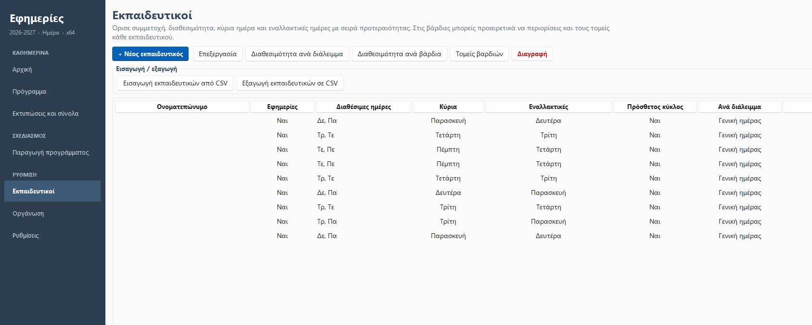
Για κάθε εκπαιδευτικό καταχωρούνται μόνο όσα χρειάζονται για την εφημερία: ονοματεπώνυμο, αν συμμετέχει στις εφημερίες, αν είναι ενεργός, οι διαθέσιμες ημέρες και προαιρετικές παρατηρήσεις. Τα κουμπιά πάνω από τη λίστα είναι: + Νέος εκπαιδευτικός Επεξεργασία Διαθεσιμότητα ανά διάλειμμα Διαθεσιμότητα ανά βάρδια Τομείς βαρδιών και Διαγραφή.
Στους τρόπους «Ανά διάλειμμα» και «Ανά βάρδια» ορίζετε επιπλέον σε ποια διαλείμματα ή βάρδιες είναι διαθέσιμος κάθε εκπαιδευτικός. Στο μοντέλο βαρδιών μπορείτε προαιρετικά να περιορίσετε τους τομείς στους οποίους επιτρέπεται να τοποθετείται (χρήσιμο σε σχολεία με διαφορετικά κτίρια).
Μπορείτε να εισάγετε εκπαιδευτικούς από αρχείο CSV (υπάρχει έτοιμο υπόδειγμα teachers_template.csv) και να εξάγετε τη λίστα σε CSV.
Αντί να καταχωρήσετε με το χέρι ημέρες και διαθεσιμότητα, μπορείτε να εισαγάγετε το ωρολόγιο πρόγραμμα του σχολείου. Πατήστε Εισαγωγή ωρολογίου (aSc XML / Excel)… στην καρτέλα «Εκπαιδευτικοί». Η εφαρμογή βλέπει πότε διδάσκει ο καθένας και προτείνει:
Από το aSc Timetables: στο aSc επιλέξτε Αρχείο → Εξαγωγή → XML και εισαγάγετε το .xml. Το αρχείο .roz είναι το εσωτερικό αρχείο του aSc και δεν διαβάζεται απευθείας. Από Excel: κουμπί Πρότυπο xlsx ωρολογίου: μία γραμμή ανά ώρα διδασκαλίας (Εκπαιδευτικός, Ημέρα, Ώρα) και προαιρετικό φύλλο «Ώρες» με τις ώρες ρολογιού.
Πριν γίνει οποιαδήποτε αλλαγή εμφανίζεται προεπισκόπηση με την αντιστοίχιση ονομάτων (η σειρά ονόματος/επωνύμου, οι τόνοι και τα αρχικά δεν πειράζουν) και τα προτεινόμενα στοιχεία. Επιλέγετε τι θα ενημερωθεί. Όσοι δεν αντιστοιχίστηκαν δεν αλλάζουν (εκτός αν ζητήσετε δημιουργία). Πριν την εφαρμογή παίρνεται αυτόματο backup. Μετά την εισαγωγή, κάντε ανακατανομή για να εφαρμοστούν στο πρόγραμμα. Οι προτάσεις είναι αφετηρία: ελέγξτε και διορθώστε ό,τι χρειάζεται.
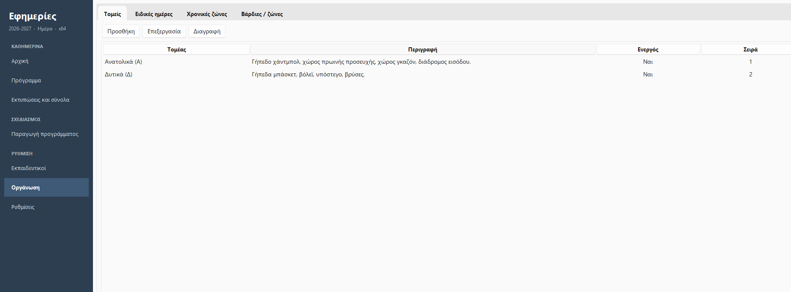
Η οθόνη έχει τέσσερις καρτέλες:
Οι τομείς είναι οι χώροι που πρέπει να καλυφθούν (π.χ. «Ανατολικά (Α)» και «Δυτικά (Δ)»). Για κάθε τομέα ορίζετε ονομασία, περιγραφή, αν είναι ενεργός και τη σειρά εμφάνισης. Αν αλλάξετε την ονομασία ενός τομέα, η νέα ονομασία εμφανίζεται αυτόματα και στο ήδη παραχθέν πρόγραμμα, στις εκτυπώσεις και στα σύνολα, χωρίς αναδημιουργία.
Καταχωρείτε μεμονωμένη ημέρα ή ολόκληρο διάστημα (από–έως): αργίες, διακοπές Χριστουγέννων/Πάσχα, εκδρομές, σχολικές γιορτές. Μια ειδική ημέρα μπορεί να είναι χωρίς εφημερία ή ημέρα όπου ισχύουν μόνο συγκεκριμένες χρονικές ζώνες και τομείς (π.χ. γιορτή με προσέλευση σε 3 τομείς, χωρίς διαλείμματα και αποχώρηση με 1 τομέα). Οι ειδικές ημέρες εισάγονται και εξάγονται σε CSV.
Οι χρονικές ζώνες είναι η βάση για τον τρόπο «Ανά διάλειμμα» και για τις βάρδιες: Προσέλευση, 1ο διάλειμμα, 2ο, 3ο, Αποχώρηση ή ό,τι άλλο χρειάζεται το σχολείο. Ενδεικτικά για Δημοτικό:
| Ζώνη | Ώρα | Διάρκεια |
|---|---|---|
| Προσέλευση | 08:00–08:15 | 15΄ |
| 1ο διάλειμμα | 09:40–10:00 | 20΄ |
| 2ο διάλειμμα | 11:30–11:45 | 15΄ |
| 3ο διάλειμμα | 12:25–12:35 | 10΄ |
| Αποχώρηση | 13:15–13:20 | 5΄ |
Χρησιμοποιούνται μόνο στον τρόπο «Ανά βάρδια / ζώνη» (Γυμνάσιο, Λύκειο ή σύνθετα ωράρια). Η βάρδια δεν ορίζεται μόνο με ώρα έναρξης/λήξης: επιλέγετε ποια διαλείμματα περιλαμβάνει (π.χ. 1η βάρδια = Προσέλευση, 1ο και 2ο διάλειμμα) και ποιους τομείς καλύπτει. Μπορεί να οριστεί γενική σύνθεση για όλη την εβδομάδα και διαφορετική για συγκεκριμένη ημέρα, καθώς και αναπληρωματικός ανά βάρδια. Η απλή τοποθέτηση ως αναπληρωματικού δεν μετρά στα σύνολα. Μετρά μόνο αν χρησιμοποιηθεί σε πραγματική αντικατάσταση.
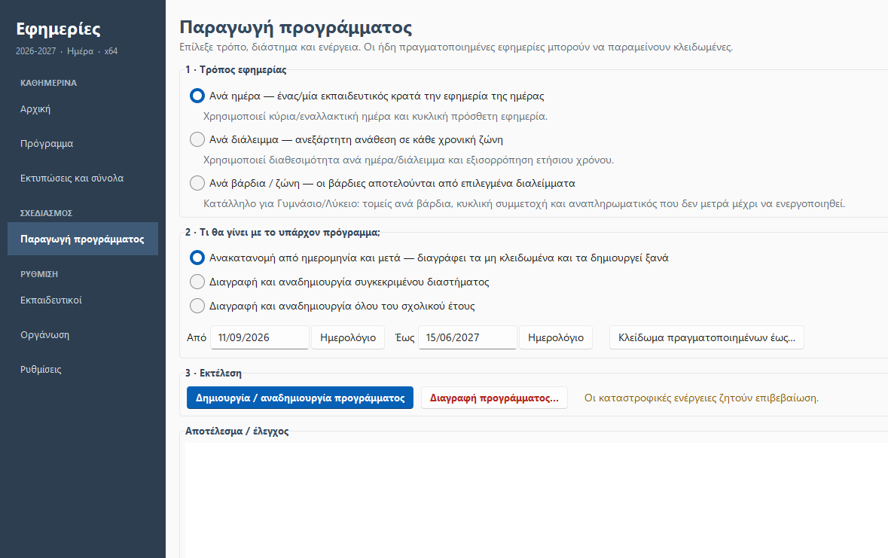
Η οθόνη έχει τρία βήματα:
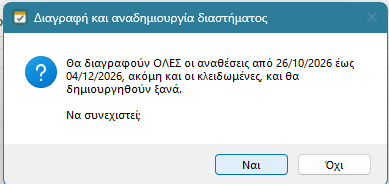
Στην οθόνη Παραγωγή, το πλαίσιο Προτεραιότητες ρυθμίζει πόσο σημαντικό είναι κάθε επιθυμητό κριτήριο, σε κλίμακα 0–5 (0 = αγνόηση, 5 = πολύ σημαντικό):
Η επιλογή «Μείνε στη θέση σου» (ενεργή από προεπιλογή) κάνει την αναδημιουργία να κρατά όσες εφημερίες γίνεται όπως ήταν. Μετά τον υπολογισμό, η εφαρμογή ανταλλάσσει εκπαιδευτικούς μέσα στην ίδια εβδομάδα (ίδια λεπτά), ώστε να επανέλθουν στις θέσεις που είχαν. Οι ανταλλαγές δεν αλλάζουν τα σύνολα κανενός, άρα δεν χαλούν την ισοκατανομή, και σέβονται διαθεσιμότητα και απουσίες. Αν η σταθερότητα είναι μικρότερη από τη βαρύτητα της κύριας ημέρας, δεν θα μετακινηθεί κανείς εκτός ημέρας του μόνο για να μείνει στη θέση του. Μετά την παραγωγή εμφανίζεται πόσες εφημερίες έμειναν ακριβώς όπως ήταν.
Ό,τι είναι υποχρεωτικό δεν ρυθμίζεται και ισχύει πάντα: διαθεσιμότητα, απουσίες, μία εφημερία ανά ημέρα/ζώνη, αριθμός θέσεων ανά τομέα.
Το κουμπί Διάγνωση συγκρούσεων… (και αυτόματα στο τέλος της παραγωγής, όταν μένουν κενές θέσεις) εξηγεί γιατί δεν καλύπτεται μια θέση: πόσοι εκπαιδευτικοί χρειάζονται και πόσοι είναι διαθέσιμοι κάθε ημέρα/ζώνη, ποιοι δεν είναι διαθέσιμοι και για ποιον λόγο (ημέρα εργασίας ή απουσία), καθώς και πρόταση λύσης (π.χ. σε ποιον να ανοίξετε διαθεσιμότητα). Υποστηρίζεται για τους τρόπους «Ανά ημέρα» και «Ανά διάλειμμα».
Στα συνηθισμένα σχολεία η παραγωγή τελειώνει σε κλάσμα του δευτερολέπτου. Αν κρατήσει περισσότερο από λίγο, εμφανίζεται μπάρα προόδου με την εβδομάδα που υπολογίζεται και κουμπί Ακύρωση. Με την ακύρωση το προηγούμενο πρόγραμμα μένει ακριβώς όπως ήταν.
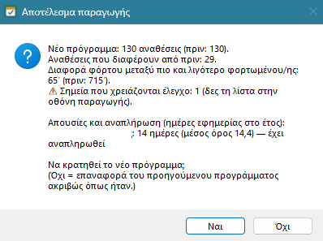
Μετά την παραγωγή εμφανίζεται σύνοψη: πόσες αναθέσεις έχει το νέο πρόγραμμα και πόσες διαφέρουν από το προηγούμενο, η διαφορά φόρτου ανάμεσα στον πιο και τον λιγότερο φορτωμένο εκπαιδευτικό, τα σημεία που χρειάζονται έλεγχο και η κατάσταση των απουσιών (βλ. κεφάλαιο 10). Μια πράσινη ένδειξη («Δεν βρέθηκαν σημεία προς έλεγχο») ή κόκκινη («Υπάρχουν σημεία που χρειάζονται έλεγχο») δείχνει αμέσως αν όλα είναι εντάξει. Επιλέξτε:
Όσα έχουν ήδη γίνει κλειδώνονται ως «πραγματοποιημένα» και μετράνε στα ετήσια σύνολα, ώστε η μελλοντική κατανομή να συνεχίζει δίκαια. Αν αλλάξει το ωρολόγιο πρόγραμμα ή οι διαθεσιμότητες στη διάρκεια της χρονιάς: κλειδώστε ό,τι πραγματοποιήθηκε, ενημερώστε τις διαθεσιμότητες και κάντε ανακατανομή μόνο από την ημερομηνία της αλλαγής και μετά.
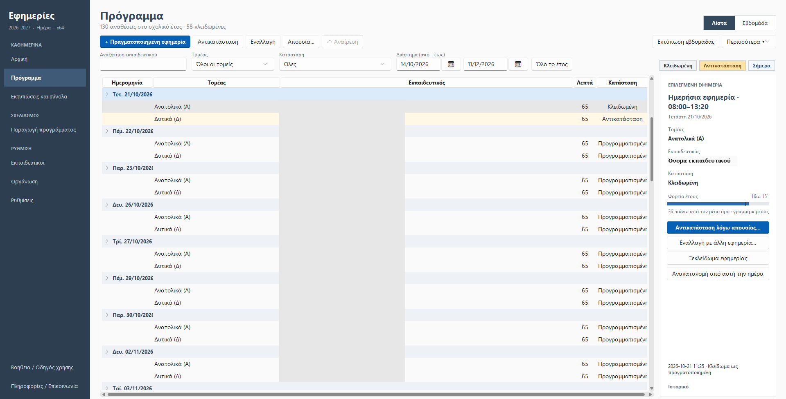
Πάνω δεξιά επιλέγετε Λίστα (ομαδοποιημένη ανά ημέρα, με άνοιγμα/κλείσιμο) ή Εβδομάδα (πλέγμα Δευτέρα–Παρασκευή). Στην προβολή εβδομάδας περιηγείστε με τα βέλη ή το κουμπί «Αυτή την εβδομάδα».
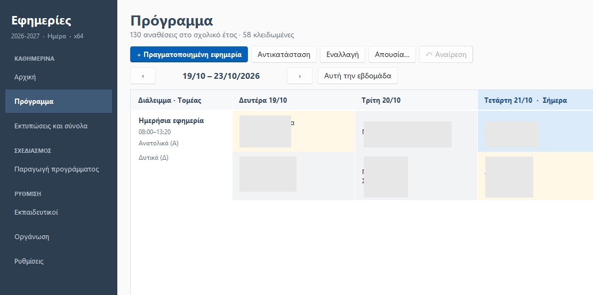
Τα φίλτρα πάνω από τη λίστα (αναζήτηση εκπαιδευτικού, τομέας, κατάσταση, διάστημα) περιορίζουν τις γραμμές. Η αναζήτηση δουλεύει χωρίς τόνους και με Ctrl+F. Τα χρώματα: γκρι = κλειδωμένη (πραγματοποιημένη), κίτρινο = αντικατάσταση, μπλε = σήμερα.
Όταν επιλέξετε μια εφημερία, δεξιά εμφανίζονται τα στοιχεία της και το φορτίο έτους του εκπαιδευτικού σε σχέση με τον μέσο όρο (η γραμμή δείχνει τον μέσο όρο). Από εκεί (ή με δεξί κλικ στη γραμμή) κάνετε τις ενέργειες:
| Ενέργεια | Τι κάνει |
|---|---|
| + Πραγματοποιημένη εφημερία | Καταγράφει εφημερία που έγινε ήδη (πριν οριστικοποιηθεί το πρόγραμμα ή χειροκίνητα). Αποθηκεύεται κλειδωμένη και μετρά στα σύνολα. |
| Αλλαγή εκπαιδευτικού | Ένα παράθυρο για δύο λειτουργίες: αντικατάσταση με άλλον εκπαιδευτικό ή εναλλαγή με άλλη εφημερία (βλ. παρακάτω). |
| Κλείδωμα ως πραγματοποιημένη | Σημαίνει μια εφημερία ως πραγματοποιημένη (εμφανίζεται στο δεξί κλικ), ώστε να μη μετακινηθεί σε ανακατανομή και να μετρά στα σύνολα. |
| Ξεκλείδωμα εφημερίας | Ξεκλειδώνει μία κλειδωμένη εφημερία (με επιβεβαίωση), ώστε να διορθωθεί ή να συμπεριληφθεί σε επόμενη ανακατανομή. |
| Ανακατανομή από αυτή την ημέρα | Ζητά επιβεβαίωση και ξαναϋπολογίζει αμέσως το πρόγραμμα από την επιλεγμένη ημέρα έως την τελευταία εφημερία, χωρίς να χρειάζεται να πάτε στη «Δημιουργία». Στο τέλος εμφανίζεται σύνοψη με «Κράτησε / Επαναφορά». |
| Απουσία… | Καταχωρεί απουσία εκπαιδευτικού για διάστημα (κεφάλαιο 10). |
| ↶ Αναίρεση | Αναιρεί την τελευταία αλλαγή (βλ. κεφάλαιο 12). |
| Ιστορικό | Δείχνει το ιστορικό αλλαγών της εφημερίας. |
Στο μενού Περισσότερα ▾ υπάρχουν επιπλέον: Κλείδωμα πραγματοποιημένων έως…, Εισαγωγή προγράμματος από CSV, και Διαγραφή προγράμματος. Η εκτύπωση και οι εξαγωγές έχουν δικά τους κουμπιά: Εκτύπωση… και Εξαγωγή ▾ (βλ. κεφάλαιο 11).
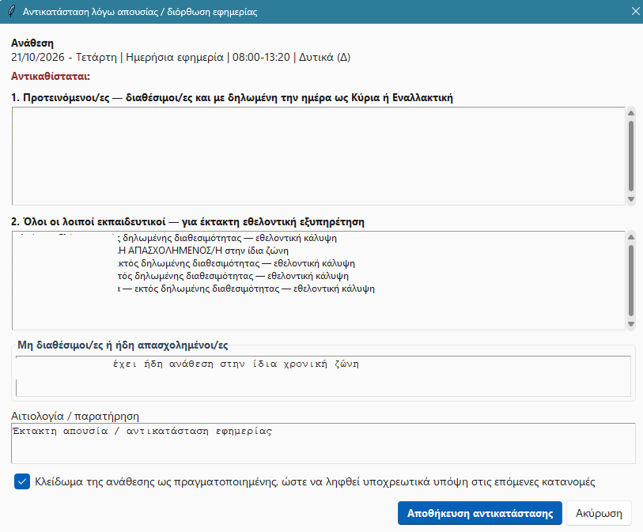
Επιλέξτε μια εφημερία και πατήστε Αλλαγή εκπαιδευτικού (ή διπλό κλικ / δεξί κλικ). Στο παράθυρο διαλέγετε:
Στο κάτω μέρος επιλέγετε αιτία από έτοιμη λίστα (Ασθένεια, Άδεια, Εκπαιδευτική / υπηρεσιακή ανάγκη, Συνεννόηση μεταξύ συναδέλφων, Διόρθωση προγράμματος, Άλλο), προαιρετική σημείωση και, αν η ανάθεση έχει ήδη γίνει, το «Κλείδωμα ως πραγματοποιημένης». Η αλλαγή καταγράφεται στο ιστορικό και αναιρείται με Ctrl+Z.
Δίπλα σε κάθε πεδίο ημερομηνίας υπάρχει πλέον ένα μικρό εικονίδιο ημερολογίου. Πατήστε το για να διαλέξετε ημερομηνία (ή γράψτε την ΗΗ/ΜΜ/ΕΕΕΕ). Αν σταθείτε λίγο πάνω του, εμφανίζεται η υπόδειξη «Επιλογή ημερομηνίας».
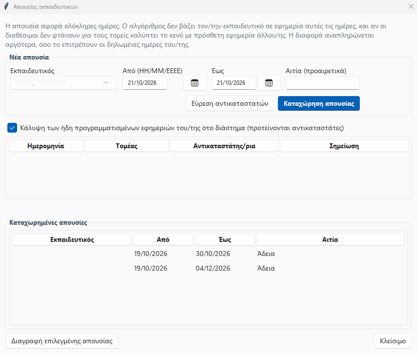
Η απουσία αφορά ολόκληρες ημέρες (από–έως). Ανοίγει από το κουμπί Απουσία… του Προγράμματος ή από τις ειδοποιήσεις της Αρχικής.
| Επιλογή | Τι κάνει και πότε ταιριάζει |
|---|---|
| Μόνο αντικατάσταση των εφημεριών | Αλλάζει μόνο τις εφημερίες του/της απόντα, με προτεινόμενους αντικαταστάτες. Για απουσία 1–2 ημερών. Η ισοκατανομή διορθώνεται στην επόμενη παραγωγή. Μετά την καταχώρηση εμφανίζεται μήνυμα με τον αριθμό και τη λίστα των αντικαταστάσεων (και πόσες δεν βρήκαν αντικαταστάτη). |
| Ανακατανομή του διαστήματος της απουσίας | Ξαναϋπολογίζει όλο το πρόγραμμα μόνο μέσα στις ημέρες της απουσίας. Οι κλειδωμένες/πραγματοποιημένες εφημερίες και οι ημέρες εκτός διαστήματος δεν αλλάζουν. Δεν ξεκινά αναπλήρωση για τον απόντα. |
| Ανακατανομή από την αρχή της απουσίας έως το τέλος του υπάρχοντος προγράμματος | Για μακροχρόνια απουσία (5, 10, 15 ημέρες). Ξαναϋπολογίζει όλο το υπόλοιπο πρόγραμμα, ώστε να γίνει και η αναπλήρωση από τον/την απόντα όταν επιστρέψει. Αλλάζουν και εφημερίες άλλων εκπαιδευτικών, γι' αυτό ζητά επιβεβαίωση. |
Στις δύο ανακατανομές παίρνεται πρώτα αυτόματο backup, εμφανίζεται η σύνοψη «πριν/μετά» (με επιλογή «Όχι» για επαναφορά του προηγούμενου προγράμματος) και στο τέλος ένα μήνυμα με το πόσες εφημερίες του/της απόντα πέρασαν σε άλλους. Ημέρες πριν από σήμερα δεν αλλάζουν ποτέ. Οι επιλογές αυτές δεν χρησιμοποιούν τη «Διαγραφή και αναδημιουργία», άρα δεν σβήνονται κλειδωμένες εγγραφές.
Οι ήδη καταχωρημένες απουσίες φαίνονται στο κάτω πλαίσιο. Για διαγραφή, επιλέξτε τη γραμμή και πατήστε «Διαγραφή επιλεγμένης απουσίας».
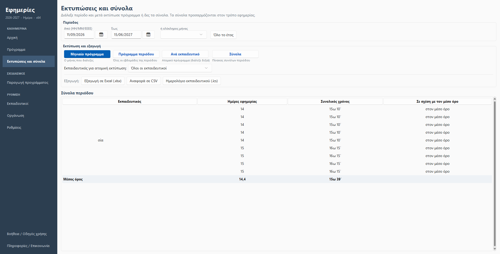
Ορίστε Από–Έως, ή επιλέξτε ολόκληρο μήνα, ή πατήστε «Όλο το έτος». Τα σύνολα στο κάτω μέρος της οθόνης ανανεώνονται αυτόματα για την περίοδο. Δείχνουν για κάθε εκπαιδευτικό τις ημέρες εφημερίας, τον συνολικό χρόνο και τη διαφορά από τον μέσο όρο.
Το κουμπί Εκτύπωση… υπάρχει στην καρτέλα «Πρόγραμμα» και στην καρτέλα «Αναφορές». Ανοίγει ένα παράθυρο όπου διαλέγετε τι θα εκτυπωθεί:
| Επιλογή | Τι εκτυπώνει |
|---|---|
| Εβδομάδα | Μια ημέρα της εβδομάδας που θέλετε· εκτυπώνεται όλη η εβδομάδα Δευτέρα–Παρασκευή. |
| Μήνας | Όλες τις εβδομάδες του μήνα που επιλέξατε. |
| Περίοδος | Όλες τις εβδομάδες της περιόδου Από–Έως. |
| Ανά εκπαιδευτικό | Ατομικό πρόγραμμα (διαλέξτε εκπαιδευτικό ή «Όλοι»). Ο καθένας ξεκινά σε νέα σελίδα. |
| Σύνολα | Πίνακας συνόλων της περιόδου. |
Στις εκτυπώσεις Μήνα και Περιόδου στο τέλος της σελίδας υπάρχει πίνακας με το σύνολο πραγματοποιημένων εφημεριών ανά εκπαιδευτικό (πραγματοποιημένες = κλειδωμένες ή όσες έχουν ήδη περάσει).
Πριν ανοίξει ο περιηγητής, το παράθυρο γράφει μια σύνοψη: η περίοδος που θα εκτυπωθεί και πόσες εφημερίες, ημέρες και εκπαιδευτικοί περιλαμβάνει. Αν δεν υπάρχουν εφημερίες, σας το λέει πριν χαθεί χρόνος. Η πραγματική προεπισκόπηση της σελίδας (διάταξη, σελιδοποίηση) εμφανίζεται από τον περιηγητή, στο παράθυρο εκτύπωσης.
Η εκτύπωση ανοίγει στον περιηγητή σας (Edge ή Chrome) ως σελίδα έτοιμη για εκτύπωση. Οι ημέρες εκτός περιόδου ή οι αργίες εμφανίζονται αχνές, ο τομέας φαίνεται πάνω από το όνομα και κάθε τομέας έχει δικό του χρώμα.
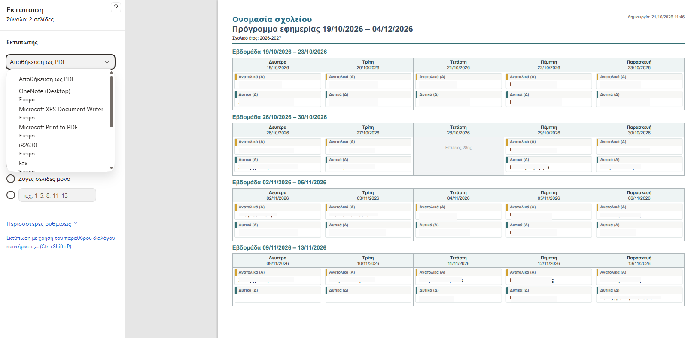
Όλες οι εξαγωγές είναι συγκεντρωμένες στο μενού Εξαγωγή ▾ (καρτέλες «Πρόγραμμα» και «Αναφορές»):
| Εξαγωγή | Περιεχόμενο / χρήση |
|---|---|
| Excel (.xlsx) — από το μενού Εξαγωγή ▾ | Ένα αρχείο με τρία φύλλα: Πρόγραμμα (όλες οι εφημερίες, με φίλτρα), Σύνολα (ανά εκπαιδευτικό: αναθέσεις, ημέρες, λεπτά, ώρες, απόκλιση) και Απουσίες. Οι ημερομηνίες είναι πραγματικές ημερομηνίες του Excel. Αποθηκεύεται στον φάκελο εξαγωγών. |
| CSV | Αναφορά συνόλων, πρόγραμμα, εκπαιδευτικοί, ειδικές ημέρες. Για περαιτέρω επεξεργασία. |
| Ημερολόγιο (.ics) | Εφημερίες ενός εκπαιδευτικού για Google Calendar, Outlook ή κινητό. |
Το κουμπί Άνοιγμα φακέλου εξαγωγών στην Αρχική ανοίγει τον φάκελο όπου αποθηκεύονται όλα τα αρχεία που εξάγετε.
Οι αλλαγές στο πρόγραμμα αναιρούνται με το κουμπί ↶ Αναίρεση ή Ctrl+Z (έως 15 αλλαγές στην ίδια συνεδρία). Καλύπτει: κλείδωμα/ξεκλείδωμα, πραγματοποιημένη εφημερία, αντικατάσταση, εναλλαγή, απουσίες και μαζικό κλείδωμα. Μετά από τέτοια ενέργεια, η γραμμή κατάστασης γράφει «(Ctrl+Z για αναίρεση)».
Η εφαρμογή παίρνει αυτόματα αντίγραφο (στον φάκελο backups\auto, τα 40 πιο πρόσφατα) πριν από: παραγωγή/ανακατανομή, διαγραφή προγράμματος, διαγραφή σχολικού έτους, εισαγωγή προγράμματος CSV με αντικατάσταση και επαναφορά backup. Επιπλέον παίρνει ένα στο κλείσιμο, αν το τελευταίο είναι παλαιότερο από 20 ώρες.
Η παραγωγή γίνεται σε μία συναλλαγή: αν αποτύχει στη μέση, το προηγούμενο πρόγραμμα μένει όπως ήταν.
Από τις Ρυθμίσεις το κουμπί Πλήρες Backup σχολικού έτους δημιουργεί αρχείο .efbackup με όλα τα δεδομένα του έτους: εκπαιδευτικούς, διαθεσιμότητες, τομείς, χρονικές ζώνες, βάρδιες, ειδικές ημέρες, πρόγραμμα, πραγματοποιημένες εφημερίες, αντικαταστάσεις, απουσίες, ιστορικό και ρυθμίσεις. Είναι ο προτεινόμενος τρόπος μεταφοράς σε νέα έκδοση ή νέο υπολογιστή.
Η Επαναφορά / εισαγωγή Backup ελέγχει την ακεραιότητα του αρχείου πριν αντικαταστήσει οτιδήποτε και προειδοποιεί αν το backup προέρχεται από νεότερη έκδοση. Παλαιότερα backup μετατρέπονται αυτόματα.
Στο «Πληροφορίες / Επικοινωνία» το κουμπί Έλεγχος για νέα έκδοση ρωτά το GitHub αν υπάρχει νεότερη έκδοση. Ο ίδιος έλεγχος γίνεται αυτόματα στην εκκίνηση το πολύ μία φορά το 24ωρο (και σιωπηλά, αν δεν υπάρχει Internet). Αν βρεθεί νεότερη, βλέπετε τις σημειώσεις της και πατάτε «Άνοιγμα σελίδας λήψης». Στην εγκατεστημένη εφαρμογή υπάρχει και το κουμπί Λήψη και εγκατάσταση τώρα: κατεβάζει το Setup, κλείνει την εφαρμογή (με αυτόματο backup), εγκαθιστά και την ανοίγει ξανά, χωρίς να αγγίξει τα δεδομένα. Στην portable μορφή την εγκατάσταση την κάνετε εσείς και τα δεδομένα μένουν στον φάκελο Shared. Ο αυτόματος έλεγχος απενεργοποιείται από το ίδιο παράθυρο. Δεν στέλνονται δεδομένα σχολείου.
| Πλήκτρα | Ενέργεια |
|---|---|
| Ctrl+1 … Ctrl+9 | Μετάβαση στην αντίστοιχη ενότητα του μενού, με τη σειρά που εμφανίζονται. |
| F5 | Ανανέωση της τρέχουσας ενότητας. |
| Ctrl+Z | Αναίρεση της τελευταίας αλλαγής προγράμματος. |
| Ctrl+F | Αναζήτηση εκπαιδευτικού στο Πρόγραμμα. |
| Ctrl+C / V / X | Αντιγραφή / επικόλληση / αποκοπή στα πεδία κειμένου. Δεξί κλικ σε πεδίο ανοίγει μενού επεξεργασίας. |
| Δεξί κλικ σε εφημερία | Μενού ενεργειών (αλλαγή εκπαιδευτικού, ξεκλείδωμα κ.λπ.). |
| Διπλό κλικ σε εφημερία | Ανοίγει την «Αλλαγή εκπαιδευτικού». |
| Πρόβλημα | Τι κάνω |
|---|---|
| Δεν ανοίγει δεύτερη εφαρμογή / μήνυμα για κλείδωμα | Η βάση χρησιμοποιείται ήδη από άλλη συνεδρία. Κλείστε την άλλη. Αν είναι σίγουρο ότι δεν τρέχει (έκλεισε απότομα), αποδεχτείτε την αφαίρεση του παλιού κλειδώματος όταν σας ρωτήσει. |
| Δεν βλέπω τα ίδια δεδομένα σε x86 και x64 | Ελέγξτε ότι και οι δύο δείχνουν στον ίδιο κοινόχρηστο φάκελο (Ρυθμίσεις → Έλεγχος κοινόχρηστων δεδομένων). |
| Στην Αρχική: «Το πρόγραμμα φτάνει έως …, ενώ η περίοδος λήγει …» | Το πρόγραμμα δεν καλύπτει όλη τη χρονιά. Πατήστε «Ανακατανομή» ή κάντε παραγωγή μέχρι τη λήξη μαθημάτων. |
| Στην Αρχική: εφημερίες «εκτός δηλωμένης διαθεσιμότητας» | Ο αλγόριθμος τις έβαλε ως τελευταία λύση (π.χ. λόγω απουσιών ή έλλειψης διαθέσιμων). Ελέγξτε το πρόγραμμα και, αν θέλετε, διορθώστε με Εναλλαγή/Αντικατάσταση. |
| Μεγάλη «Διαφορά φόρτου» ανάμεσα σε δύο εκπαιδευτικούς | Συνήθως οφείλεται σε απουσία. Θα μικρύνει με την αναπλήρωση. Δείτε «Δες κατανομή» και το κεφάλαιο 10. |
| Άλλαξα όνομα τομέα | Η αλλαγή ενημερώνεται αυτόματα και στο υπάρχον πρόγραμμα. Δεν χρειάζεται αναδημιουργία. |
| Άλλαξε το ωρολόγιο πρόγραμμα της σχολικής χρονιάς | Κλειδώστε ό,τι πραγματοποιήθηκε, ενημερώστε τις διαθεσιμότητες και κάντε ανακατανομή μόνο από την ημερομηνία της αλλαγής και μετά. |
| Έκανα λάθος σε μια αλλαγή | Πατήστε Ctrl+Z (Αναίρεση). Για μεγαλύτερο πρόβλημα, επαναφέρετε από backups\auto ή από το Πλήρες Backup. |
| Το Excel δεν ανοίγει το αρχείο εξαγωγής | Κλείστε το αρχείο αν είναι ήδη ανοιχτό σε άλλο πρόγραμμα και ξαναδοκιμάστε (δημιουργείται νέο αρχείο με την ώρα στο όνομα). Αν συνεχίζεται, στείλτε μου το logs\efimeries.log. |
| Σφάλμα που δεν καταλαβαίνω | Η εφαρμογή γράφει τα σφάλματα στο logs\efimeries.log. Στείλτε το αρχείο στη διεύθυνση επικοινωνίας της πρώτης σελίδας. |
Πληροφορίες, προβλήματα ή προτάσεις βελτίωσης: Κοκολόγος Σταμάτης, ΠΕ70 · https://github.com/stam1966/efimeries-ekpaideftikon/issues